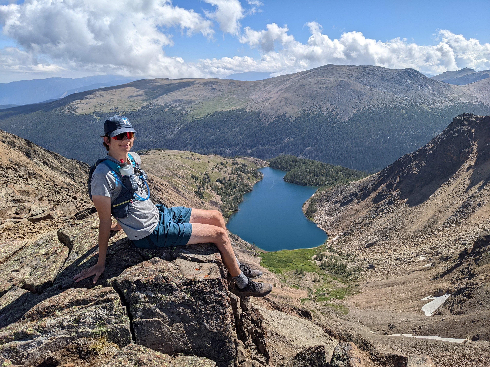

My Life
My name is Timo Clement. At the time of writing this, I am a 17 year old highschool student who attends Eric Hamber Secondary in Vancouver BC Canada.
I am mostly Finnish and Italian with various other European countries mixed into my heritage. I love doing sports and being in the outdoors but also have a passion
for computers and physics. In my Highschool, I am the co-president of our schools Coding Club and I play lead trombone in both the Wind Ensemble and Jazz Band.
Outside of school I train hard for the Hollyburn Cross Country Ski Race Team and go to all sorts of races around the province and country. In my free time, I mountain bike and run
through the amazing trails of BC with friends and family.
Sports
Sports have played incredibly huge role in my life. I have Cross Country Skied since I was three and have been mountain biking since I was 8. Sports tie my family together
and it seems I can never get enough! I have done countless comeptitive events through skiing biking and running. The feeling while I am grinding out hill repeats never gets old. It may not
be pleasant in the moment, but its always so rewarding after. Sports define a big part of who I am and I couldn't see myself without them.
My Family
I truly appreciate everything my parents have done for me. I am so incredibly lucky to be apart of my amazing family who has shown endless support and given me ample opportunities throughout my life. My mom has always been there to help no matter what my issue is. I have an unbreakable bond with my dad who always seems to know the right thing to say in every moment. I can’t put into words how much I love my family.
The Great Outdoors
Throughout my life I have found I thrive in nature. Every chance I get, I am ontop of some mountain feeling alive.
I am addicted to the feeling of freedom and fresh air. I am so glad I get to live in a beautiful, mountain filled city such as Vancouver.
We are truly lucky to have endless trails on our doorstep.
Friends
Through skiing, band and school, I have made countless friends for life. My ski team is a brotherhood of kids who grew up truly grinding together and nothing
could break our friendship. From all the adventures we have been on, sometimes it makes me sad when I think I will see less and less of them when I head off to university. However a famous quote
by Dr. Suess has always stuck with me: "Don’t Cry Because It’s Over, Smile Because It Happened."
That is a small snippet of my thrilling life I wanted to share. Sharing your life story can build confidence and restore sense of purpose in people and no one should ever
shy away from it. Knowing who you are is critical for countless things in life espically when you have to ask yourself hard questions when making decisions. One final quote I like to stick by is: Sometimes you think in life; you should be somewhere else, doing something else, traveling somewhere else. But if you think happiness is always somewhere else it'll never be where you are.